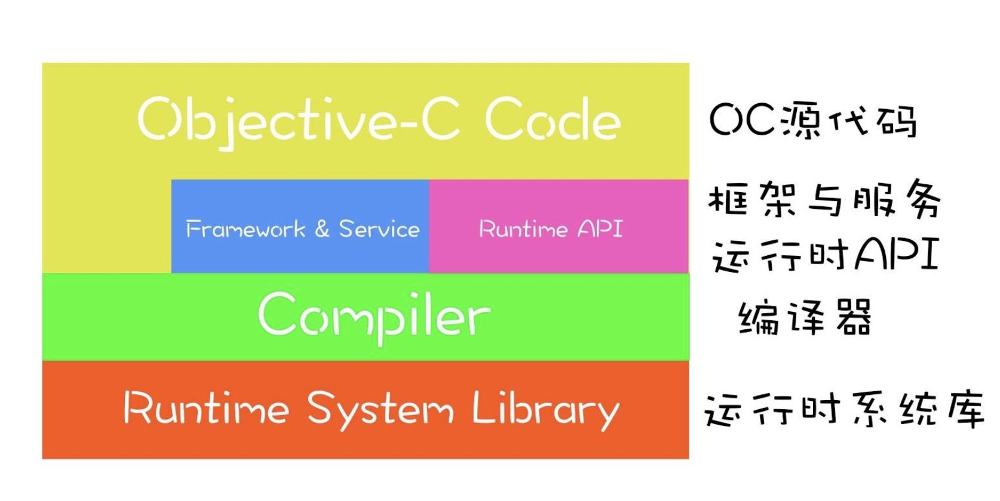
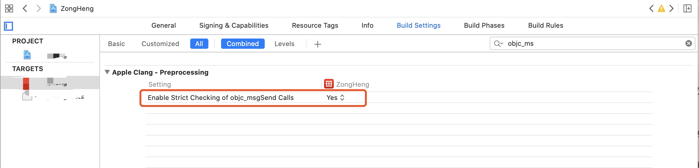
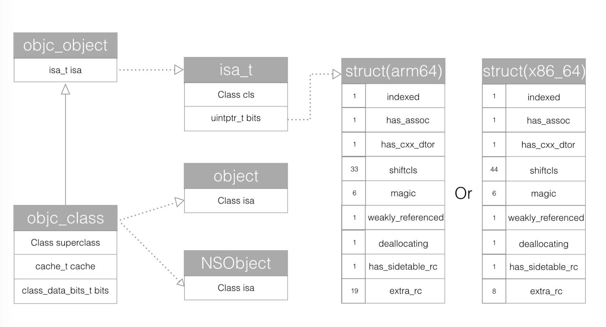
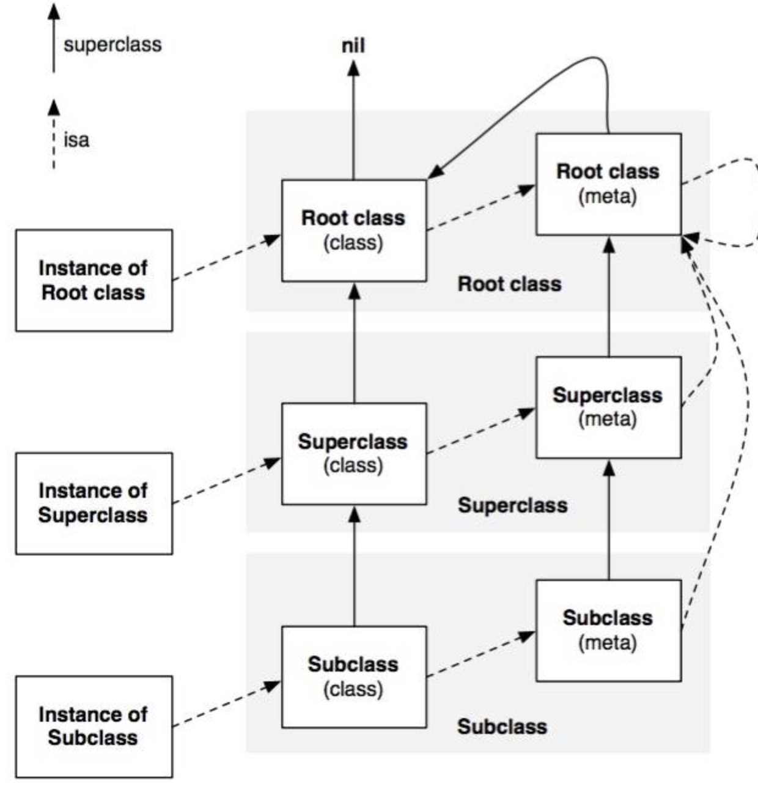
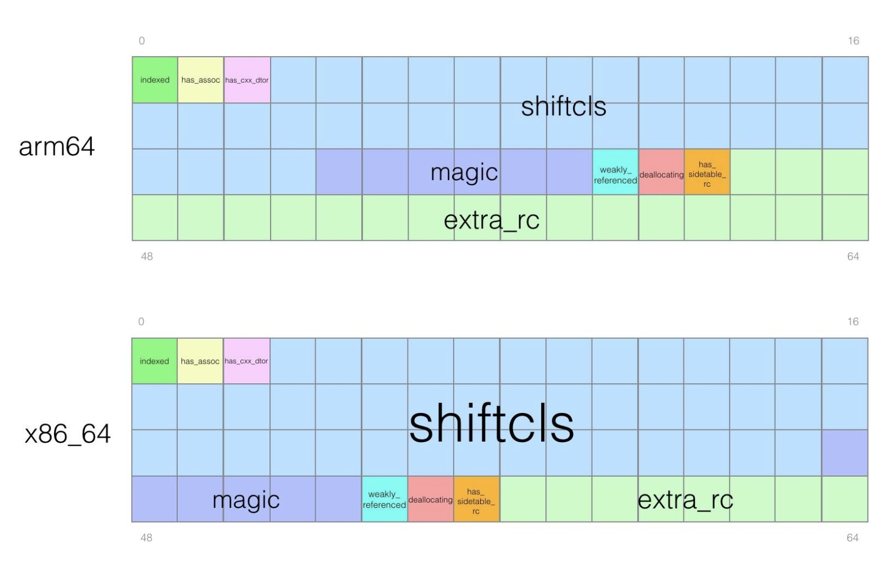
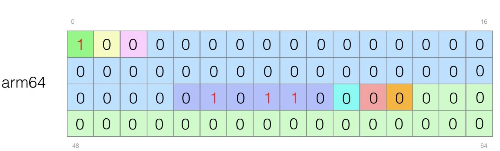
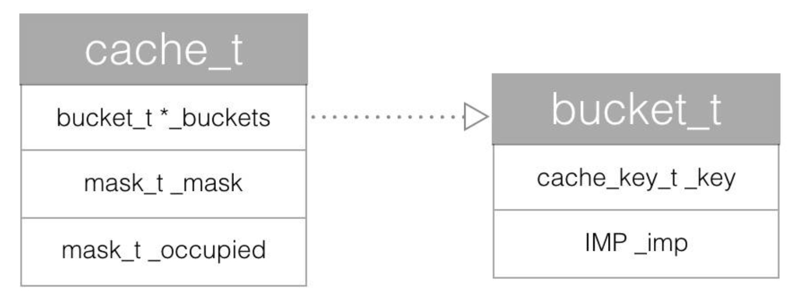
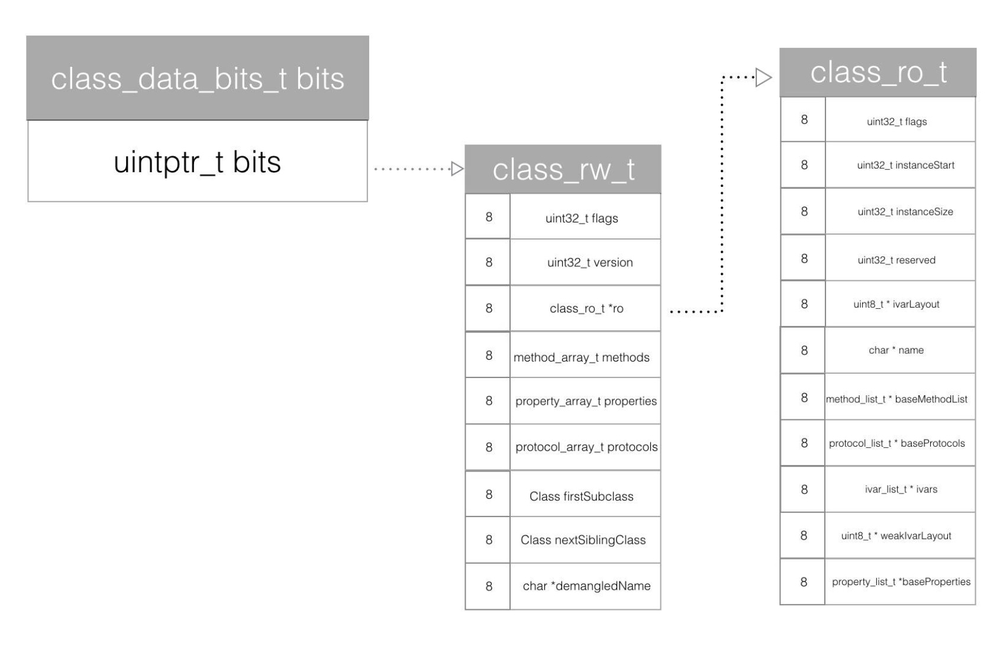
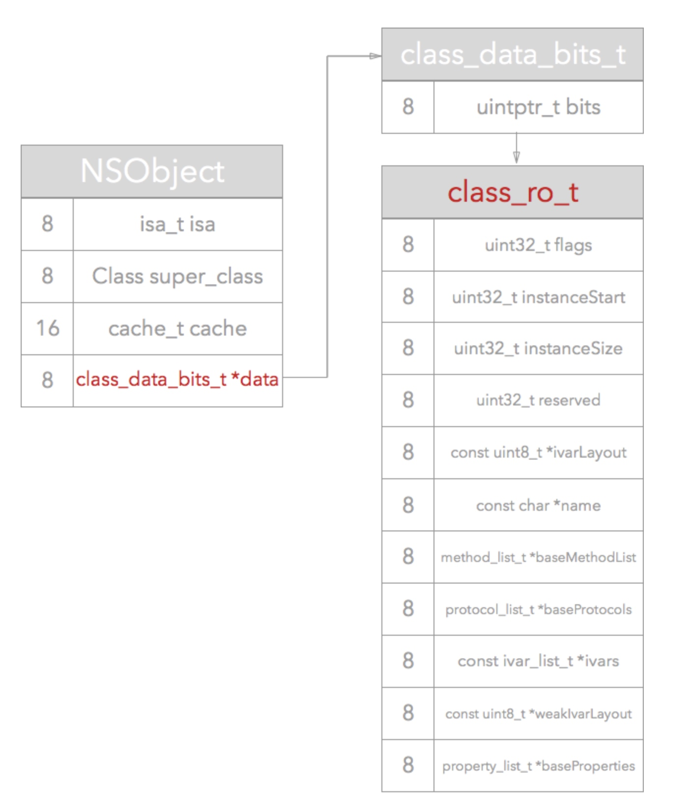
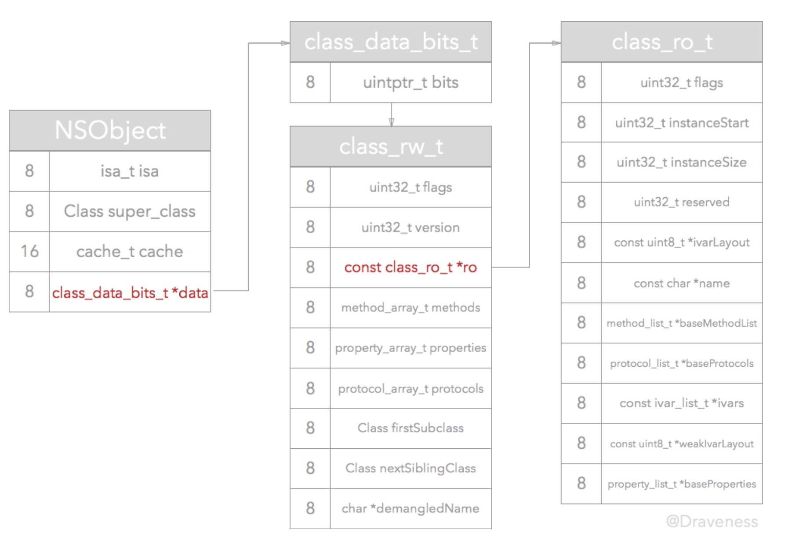

一,Runtime 是什么?
Runtime 看字面意思就是运行时,是一套底层的 C语言 API,Objective-C 之所以具有动态性,就是因为 Runtime 的存在,否则 OC根本不能算动态性语言,Runtime 是 iOS 系统的核心之一.我们在编码的过程中,可以给任何一个对象发送消息,在编译阶段只是确定了要向接受者发送这条消息,而接受者将要如何响应和处理这条消息,就由运行时来决定了.
C语言中在编译期,函数的调用就会决定调用哪个函数(OC 中叫方法)
而 OC 方法属于动态调用过程,在编译期并不能真正调用哪个函数,只有在真正运行的时候才会根据函数的名称来找到对象的函数来调用.
OC 是一个动态语言,意味着他不仅仅需要一个编译器,也需要一个运行时系统来动态创建类和对象,进行消息传递和转发.
OC 在三种层面上与 Runtime 系统进行交互:

- 通过 OC 源代码
- 通过 Foundation 框架的 NSObject 类定义的方法
- 通过对 Runtime 库函数的直接调用
通过 OC 源代码
一般情况下开发者只需要编写 OC代码,Runtime 系统会自动的在幕后把我们编写的 OC 源代码在编译阶段转换成运行时代码,在运行时确定对应的数据结构和调用的具体哪个方法.
通过 Foundation 框架的 NSObject 类定义的方法
在 OC 的世界中,除了 NSProxy 类以外,所有的类都是 NSObject 的子类.在 Foundation 框架下定义了 NSObject 和 NSProxy 两个基类.这两个基类都遵循了NSObject 协议,在 NSObject 协议中,有以下 5 个方法,是可以从 Runtime 中获取信息,让对象自我检查.
- (Class)class OBJC_SWIFT_UNAVAILABLE("use 'anObject.dynamicType' instead");
- (BOOL)isKindOfClass:(Class)aClass;
- (BOOL)isMemberOfClass:(Class)aClass;
- (BOOL)conformsToProtocol:(Protocol *)aProtocol;
- (BOOL)respondsToSelector:(SEL)aSelector;
-class方法返回对象的类；
-isKindOfClass: 和 -isMemberOfClass: 方法检查对象是否存在于指定的类的继承体系中；
-respondsToSelector: 检查对象能否响应指定的消息；
-conformsToProtocol:检查对象是否实现了指定协议类的方法；
在 NSObject 的类中还定义了一个方法:
- (IMP)methodForSelector:(SEL)aSelector;
这个方法会返回指定方法实现的地址 IMP.
通过对 Runtime 库函数的直接调用
关于库函数可以在Objective-C Runtime Reference中查看 Runtime 函数的详细文档。
当我们导入了objc/Runtime.h和objc/message.h两个头文件之后，我们查找到了Runtime的函数之后，代码打完，发现没有代码提示了，那些函数里面的参数和描述都没有了。对于熟悉Runtime的开发者来说，这并没有什么难的，因为参数早已铭记于胸。但是对于新手来说，这是相当不友好的。而且，如果是从iOS6开始开发的同学，依稀可能能感受到，关于Runtime的具体实现的官方文档越来越少了？可能还怀疑是不是错觉。其实从Xcode5开始，苹果就不建议我们手动调用Runtime的API，也同样希望我们不要知道具体底层实现。所以IDE上面默认代了一个参数，禁止了Runtime的代码提示，源码和文档方面也删除了一些解释。
具体设置如下:

如果发现导入了两个库文件之后，仍然没有代码提示，就需要把这里的设置改成NO，即可。
二 NSObject 起源
上面我们可以看出,Runtime 都和 NSObject 有关,所以我们先来研究一下 NSObject .
NSObject 的定义:
typedef struct objc_class *Class;
@interface NSObject <NSObject> {
Class isa OBJC_ISA_AVAILABILITY;
}
在 Objc2.0 之前,Objc_class 的源码如下:
struct objc_class {
Class isa OBJC_ISA_AVAILABILITY;
#if !__OBJC2__
Class super_class OBJC2_UNAVAILABLE;
const char *name OBJC2_UNAVAILABLE;
long version OBJC2_UNAVAILABLE;
long info OBJC2_UNAVAILABLE;
long instance_size OBJC2_UNAVAILABLE;
struct objc_ivar_list *ivars OBJC2_UNAVAILABLE;
struct objc_method_list **methodLists OBJC2_UNAVAILABLE;
struct objc_cache *cache OBJC2_UNAVAILABLE;
struct objc_protocol_list *protocols OBJC2_UNAVAILABLE;
#endif
} OBJC2_UNAVAILABLE;
在这里我们可以看到,在一个类中有超类的指针,类名,版本信息
- objc_ivar_list *ivars: objc_ivar_list 成员变量的指针
- objc_method_list **methodLists: 指向 objc_method_list 指针的指针;
- *methodLists : 指向方法列表的指针(这里如果动态修改 methodLists的值来添加成员方法,这也是 Category 实现的原理.)
2006 年苹果发布了 Objc2.0 之后,objc_class 的定义就变成了下面的样子了:
typedef struct objc_class *Class;
typedef struct objc_object *id;
@interface Object {
Class isa;
}
@interface NSObject <NSObject> {
Class isa OBJC_ISA_AVAILABILITY;
}
struct objc_object {
private:
isa_t isa;
}
struct objc_class : objc_object {
// Class ISA;
Class superclass;
cache_t cache; // formerly cache pointer and vtable
class_data_bits_t bits; // class_rw_t * plus custom rr/alloc flags
}
union isa_t
{
isa_t() { }
isa_t(uintptr_t value) : bits(value) { }
Class cls;
uintptr_t bits;
}
把源码转换成类图,就是下图的样子:

从上述源码中,我们可以看到 OC 对象都是C语言的结构体实现的,在 objc2.0中,所有对象都会包含一个 isa_t 类型的结构体
- objc_object: 被源码 typedef 成了 id 类型,这也就是我们平时用到的 id 类型,这个结构体中只包含了一个 isa_t 类型的结构体
- objc_class: 继承与 objc_object,所以 objc_class 中也会包含 isa_t 类型的结构体 isa.(因此我们也能得出一个结论:OC 中类也是一个对象),除了 isa 还包含了其他 3 个成员变量一个是父类的指针(superclass),一个是方法缓存(cathe),最后一个是这个类的实例方法链表(class_data_bits_t)
当一个对象的实例方法被调用的时候,会通过 isa 找到相应的类 class,然后在类的 class_data_bits_t 中查找方法,class_data_bits_t 是指向了类对象的数据区域,在该数据区域内查找响应方法的对应实现.
但是当我们调用类方法的时候,类对象的 isa 里面是什么?这里为了和实例对象查找方法的机制一致,引入了元类(meta-class)的概念.
在引入了元类之后,类对象和实例对象查找方法的机制就完全统一了.
对象的实例方法调用时，通过对象的 isa 在类中获取方法的实现。
类对象的类方法调用时，通过类的 isa 在元类中获取方法的实现。
元类之所以重要,是因为他存储着一个类所有的类方法.每个类都会有一个单独的 meta-class.
接下来那张经典图又来了:

- Root class (class)其实就是NSObject，NSObject是没有超类的，所以Root class(class)的superclass指向nil。
- 每个Class都有一个isa指针指向唯一的Meta class
- Root class(meta)的superclass指向Root class(class)，也就是NSObject，形成一个回路。
- 每个Meta class的isa指针都指向Root class (meta)。
1, isa_t 结构体的具体实现
接下来我们就该研究研究isa的具体实现了。objc_object里面的isa是isa_t类型。通过查看源码，我们可以知道isa_t是一个union联合体。
结构体和共用体的区别在于：结构体的各个成员会占用不同的内存，互相之间没有影响；而共用体 的所有成员占用同一段内存，修改一个成员会影响其余所有成员。
结构体占用的内存大于等于所有成员占用的内存的总和（成员之间可能会存在缝隙），共用体占用的内存等于最长的成员占用的内存。共用体使用了内存覆盖技术，同一时刻只能保存一个成员的值，如果对新的成员赋值，就会把原来成员的值覆盖掉。
struct objc_object {
private:
isa_t isa;
public:
// initIsa() should be used to init the isa of new objects only.
// If this object already has an isa, use changeIsa() for correctness.
// initInstanceIsa(): objects with no custom RR/AWZ
void initIsa(Class cls /*indexed=false*/);
void initInstanceIsa(Class cls, bool hasCxxDtor);
private:
void initIsa(Class newCls, bool indexed, bool hasCxxDtor);
接下来我们从 initIsa 方法研究
inline void
objc_object::initInstanceIsa(Class cls, bool hasCxxDtor)
{
initIsa(cls, true, hasCxxDtor);
}
inline void
objc_object::initIsa(Class cls, bool indexed, bool hasCxxDtor)
{
if (!indexed) {
isa.cls = cls;
} else {
isa.bits = ISA_MAGIC_VALUE;
isa.has_cxx_dtor = hasCxxDtor;
isa.shiftcls = (uintptr_t)cls >> 3;
}
}
initIsa 第二个参数传入了一个 true,所以 initIsa 就会执行 else 里面的语句
# if __arm64__
# define ISA_MASK 0x0000000ffffffff8ULL
# define ISA_MAGIC_MASK 0x000003f000000001ULL
# define ISA_MAGIC_VALUE 0x000001a000000001ULL
struct {
uintptr_t indexed : 1;
uintptr_t has_assoc : 1;
uintptr_t has_cxx_dtor : 1;
uintptr_t shiftcls : 33; // MACH_VM_MAX_ADDRESS 0x1000000000
uintptr_t magic : 6;
uintptr_t weakly_referenced : 1;
uintptr_t deallocating : 1;
uintptr_t has_sidetable_rc : 1;
uintptr_t extra_rc : 19;
# define RC_ONE (1ULL<<45)
# define RC_HALF (1ULL<<18)
};
# elif __x86_64__
# define ISA_MASK 0x00007ffffffffff8ULL
# define ISA_MAGIC_MASK 0x001f800000000001ULL
# define ISA_MAGIC_VALUE 0x001d800000000001ULL
struct {
uintptr_t indexed : 1;
uintptr_t has_assoc : 1;
uintptr_t has_cxx_dtor : 1;
uintptr_t shiftcls : 44; // MACH_VM_MAX_ADDRESS 0x7fffffe00000
uintptr_t magic : 6;
uintptr_t weakly_referenced : 1;
uintptr_t deallocating : 1;
uintptr_t has_sidetable_rc : 1;
uintptr_t extra_rc : 8;
# define RC_ONE (1ULL<<56)
# define RC_HALF (1ULL<<7)
};


关于参数的说明:
- index,代表是否开启 isa 指针优化.index= 1,代表开启优化
为了节省内存和提高执行效率,苹果提出了 TaggedPointer 概念,对于 64 位处理器,引入TaggedPointer之后,相关逻辑能较少一半的内存占用,以及 3 倍的访问速度提升,100 倍的创建销毁速度提升.
has_assoc:
是否含有关联引用,没有关联引用的可以更快速的释放内存
has_cxx_dtor:
表示改对象是否含有 C++或者 OC 的析构器
shiftcls:
类的指针,arm64 架构中有 33 位可以存储类的指针
源码中 isa.shiftcls = (uintptr_t)cls >> 3
将当前地址右移三位的主要原因是用于将 class 指针中无用的后三位清除减小内存的消耗,因为类 的指针要按照字节(8bit)对齐内存,其指针后三位都是没有意义的 0
magic
判断对象是否初始化完成,在 arm64 中 0x16 是调试器判断当前对象是真的对象还是没有初始化的空间
weakly_referenced:
对象被指向或者曾经指向一个 ARC 的弱变量,没有弱引用的对象可以更快速的释放
deallocating
对象是否正在释放内存
has_sidetable_rc
判断该对象的引用计数是否过大,如果大则需要散列表来进行存储
extra_rc
存放该对象的引用计数值减一后的结果.对象的引用计数超过 1,会存在这个里面,如果引用计数为 10,extra_rc的值就为 9
ISA_MAGIC_MASK 和 ISA_MASK 分别通过掩码的方式获取 MAGIC 值和 isa 类指针
2, 下面来看看 cathe_t 的具体实现
源码:
struct cache_t {
struct bucket_t *_buckets;
mask_t _mask;
mask_t _occupied;
}
typedef unsigned int uint32_t;
typedef uint32_t mask_t; // x86_64 & arm64 asm are less efficient with 16-bits
typedef unsigned long uintptr_t;
typedef uintptr_t cache_key_t;
struct bucket_t {
private:
cache_key_t _key;
IMP _imp;
}

从源码里,我们可以看到,cache_t 中存储了一个 bucke_t 的结构体,以及两个 unsgined int 的变量
mask:
分配用来缓存 buckt 的总数
occupied:
表示目前实际占用的缓存 bucket 的个数
bucket_t:
这个结构体中存储了一个 unsigned long 和一个 IMP.IMP 是一个函数指针,指向了一个方法的具体实现
cache_t 中的 bucket_t *_buckets 其实就是一个散列表,用来存储 Method 的链表
cache 的主要作用是为了优化方法的调用性能,当对象 recever调用方法 message 时,首先根据对象 receiver的 isa 指针查找到他对应的类,然后在类的 methodLists 中搜索方法,如果没有找到就使用 super_class 指针到父类中的 methodLists 查找,一旦找到就调用方法,如果没有找到,就进行消息转发或者忽略,但是这样查找的效率太低,每次调用方法都查一遍表,效率很低,因此用 Cache 来缓存调用的方法,每次调用方法先去缓存中查找,提高效率.如果没有找到在去 methodLists 中查找.
3, class_data_bits_t的具体实现
struct class_data_bits_t {
// Values are the FAST_ flags above.
uintptr_t bits;
}
struct class_rw_t {
uint32_t flags;
uint32_t version;
const class_ro_t *ro;
method_array_t methods;
property_array_t properties;
protocol_array_t protocols;
Class firstSubclass;
Class nextSiblingClass;
char *demangledName;
}
struct class_ro_t {
uint32_t flags;
uint32_t instanceStart;
uint32_t instanceSize;
#ifdef __LP64__
uint32_t reserved;
#endif
const uint8_t * ivarLayout;
const char * name;
method_list_t * baseMethodList;
protocol_list_t * baseProtocols;
const ivar_list_t * ivars;
const uint8_t * weakIvarLayout;
property_list_t *baseProperties;
method_list_t *baseMethods() const {
return baseMethodList;
}
};

在 objc_class 结构体中的注释写到 class_data_bits_t 相当于 class_rw_t 指针加上 rr/alloc 的标志
它为我们提供了便捷方法返回其中的 class_rw_t *指针:
class_rw_t *data() {
return bits.data();
}
Objc 的类的属性,方法,以及遵循的协议在 objc2.0 的版本之后都是放在 class_rw_t 中,class_ro_t 是一个指向常量的指针,存储来编译器决定了的属性,方法和遵循协议.
rw-readwrite,ro-readonly 在编译期类的结构体中的 class_data_bits_t *data 指向的是一个 class_ro_t *指针:

在运行时调用 realizeClass 方法,会做已下 3 件事情:
- 从 class_data_bits_t 调用 data 方法,将结果从 class_rw_t 强制转换为 class_ro_t 指针
- 初始化一个 class_rw_t 结构体
- 设置结构体 ro 的值以及 flag
最后调用 methodizeClass 方法,把类里面的属性,协议,方法都加载进来
方法 method 的定义:
struct method_t {
SEL name;
const char *types;
IMP imp;
struct SortBySELAddress :
public std::binary_function<const method_t&,
const method_t&, bool>
{
bool operator() (const method_t& lhs,
const method_t& rhs)
{ return lhs.name < rhs.name; }
};
};
里面包含 3 个成员变量
SEL 是方法的名字name
types 是 Type Encoding 类型编码
IMP 是一个函数指针,指向的函数的具体实现,在 Runtime 中消息传递和转发的目的就是为了找到 IMP,并执行函数
整个运行时过程可以描述为:

参考:https://halfrost.com/objc_runtime_isa_class/